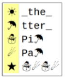
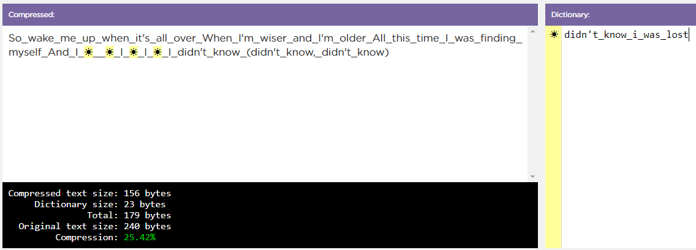

This list represents several common abbreviations used in text messages: lol, ty, c u soon. Why might we use abbreviations when sending messages? What are the advantages?
Work with your partner on the “Decode This Message” activity guide.
What does the message say?
Message:
Key:

How were you able to decode the message? What information did you need?
Navigate to Code Studio Lesson 9 Level 1. Open up the 1.9 Digital Activity Guide. Work with your partner to try to compress the text.
Runs the activity and uses the computer.
Keeps track of the big picture and helps guide the driver to the goal.
The black box has statistics. Higher compression is better. Smaller total is better.

What was your compression ratio? What strategies are you using to compress your sample text? Which ones seem most successful?
Up next is a video that will help us out a bit.
Click the drop-down menu to explore other texts to compress. Look for texts you predict will be “easy” to compress and texts you predict will be “difficult”. Work with your partner to compress the easy and then the difficult texts. Fill in the Digital Activity Guide as you go.
You should swap “driver” and “navigator” roles for each text.
Lossless compression: a process for reducing the number of bits needed to represent something without losing any information. This process is reversible, and all data is preserved exactly as it started.